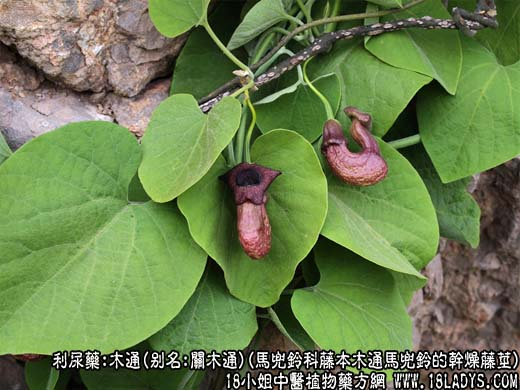
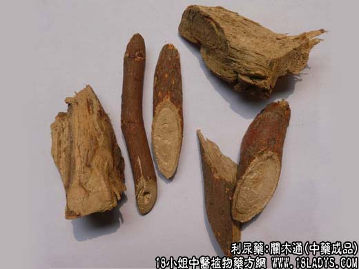
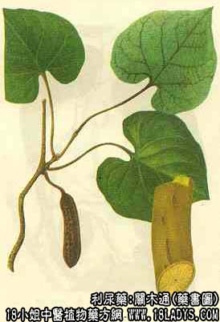

木通为常用中药。《神农本草经》列为上品。原名“通草”，市售品原植物混乱。但商品主要分关木通和川木通两类。前者主销东北，华北，华东地区；后者主销中南，西南等地区。此外还有木通科木通。地产地销。
1、关木通
来源：为马兜铃科缠绕性藤本植物木通马兜铃的干燥藤茎。均为野生。
产地：主产于吉林抚松、辑安，黑龙江宁安，虎林，辽宁新宾，凤城等地。
性状鉴别：关木通为长条圆柱形，长几十厘米到几米不等。直径为1~5厘米，外表皮平滑，淡黄褐色或灰黄色，少数残留有褐色斑状栓皮。有微隆起的节，质坚体轻，折断面皮部黄白色，木部黄色宽广，导管孔洞排列整齐，射线明显如如车轮状，髓部不明显。味苦。
以条细匀，直径在2~3厘米，色黄者为最佳。
主要成分：含马兜铃酸。
关木通的功效与作用：1、利尿。实验证明，其利尿作用强于淡竹叶，但弱于猪苓。
2、抗菌和抗真菌。体外试验，对革兰式阳性杆菌、痢疾杆菌、致病性皮肤癣菌，均有抑制作用。
炮制：切片生用。
性味：苦、寒。
归经：入心、小肠、膀胱经。
功能：小便不利，水肿，胸中烦热，目眩咽痛。
临床应用：1、用于治疗心火盛（口舌生疮、咽灼喉痛、心情烦躁。睡眠不佳），取其有利尿消炎作用。可清热除烦，配淡竹叶、生地等同用，方如导赤散。
2、用于治疗小便滞涩、尿痛、尿频（如急性尿道炎），取其有利尿和抗菌作用，可用导赤散，或配车前子、萹蓄、茯苓等。
3、用于治疗水肿（脚气水肿、肾炎水肿均可），作为辅助药。配猪苓、茯苓，方如木通散。
使用注意：木通性极苦寒，前人曾谓其能大泄心肾之气，不可妄投。现代队木通的使用虽已较普遍，但仍应掌握用量，不宜过大。临床上也观察到，一次服木通2两以上时，能引起肾功能衰竭，因此，必须引起警惕。孕妇慎用，老人和体弱者药使用木通时，应酌情加党参、白术。
用量：2.4~9g。
处方举例：木通散（《证治准绳》）：木通4.5g、苏叶9g、桑白皮6g、猪苓6g、赤茯苓9g、槟榔9g，研末，加生姜、薤白，水煎服。
2、川木通（山木通、淮木通）
来源：为毛茛科小木通的干燥茎，野生。
产地：主产于西南、中南地区，以四川、湖南等省较多。
性状鉴别：茎呈圆柱形，长30~70厘米，直径1~22厘米，外表皮灰黄色，全体有明显规则的纵沟纹。茎上有节，节部较膨大，节间距离16~27厘米。体轻，质坚韧，不易折断。断面呈放射性裂皮。裂片上满布小孔。气微味苦。尚有一种绣球藤木通也作川木通用。
以条匀，内外色黄，无黑心者为佳。
效用：同关木通。
3、白木通
来源：为木通科落叶木质藤本植物白木通等干燥茎。均为野生。
产地：四川、湖北、广西、云南、江西、贵州、江苏等省。
性状鉴别：茎呈圆形而弯曲，长30~60厘米，直径1.3~厘米。表面呈灰褐色，外皮极粗糙而有许多不规则裂纹，节不明显，仅可见侧枝断痕。质坚实，难折断。断面不整齐，皮部较厚，黄棕色，中央木部呈黄白色，有车轮状花纹，中心有小型的髓。气无，味苦而涩。
以条匀，内色黄者为佳。
效用：同关木通。
注：商品木通的植物来源很复杂。以上三种商品：
1、关木通的原植物主要为马兜铃科植物木通马兜铃。
2、川木通的原植物除小木通外尚有毛茛科铁线莲属多种植物：如绣球，藤女萎，小叶铁线莲，华南铁线莲等等。而药材商品，在四川以直径1厘米以上者称大木通；1厘米以下者称小木通。
3、木通科植物木通的来源：有五叶木通，三叶木通和白木通。其商品只在就地生产，就地使用，很少外销。江苏以五叶木通之茎作“海风藤”药用。其果实则为药用的预知子，又名八月瓜，八月扎。
按《图经本草》记述，药用木通应以木通科木通为正品。
四川汗产销一种木通，为马兜铃科植物穆边马兜铃的藤茎，与正文所列川木通内之淮=木通不同，应当区别。